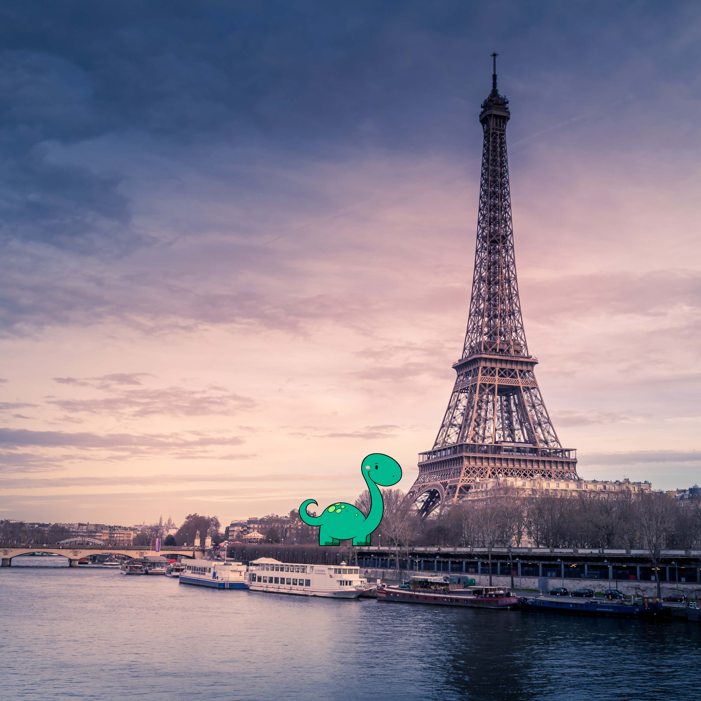

Here I am visiting Hawaii! The state of Hawaii consists of eight main islands: Niihau, Kauai, Oahu, Maui, Molokai, Lanai, Kahoolawe and the Big Island of Hawaii. Under-sea volcanoes that erupted thousands of years ago formed the islands of Hawaii.This is me visiting the Forbidden City in Beijing, China. During the Ming and Qing dynasties, the Forbidden City was forbidden for commoners and only opened for imperial families and government officials who were invited. Now, it’s open for all as a tourist attraction.These are the Abu Simbel Temples of Egypt. For 3,000 years, it sat on the west bank of the Nile River, between the first and second cataracts of the Nile. However, the temple complex was dismantled and rebuilt on a higher hill to make way for the Aswan High Dam in the 1960s.Here I am about to take a scooter around Greece. Did you know that the whole country has more than 250 days of sun on average? That’s more than 3000 sunny hours per year. Some islands even see around 300 days of sun per year!

This is me standing by the Eiffel Tower. It is 324 meters tall—including antennas—and weighs 10,100 tons. It is possible to climb to the top, but there are 1,665 steps. Most people take the lift.Here I am at the Colosseum in Rome, Italy. The Colosseum was built between 72 A.D and 80 A.D in the heart of Ancient Rome. This building had 80 entrances and could seat approximately 50,000 spectators who would come to watch sporting events and games.This is me at the Sydney Opera House. 15,500 light bulbs are changed every year at the Sydney Opera House. Next time you’re at the Sydney Opera House, look up and see if you can spot any burnt out light bulbs. And lastly, here I am at the Taj Mahal. With construction beginning around 1632 and finishing in 1653, the Taj Mahal took an estimated 22 years to build. Small refinements continued thereafter. Construction of the Taj Mahal cost an estimated 32 million Indian rupees, the equivalent of over US $1 billion at the time.